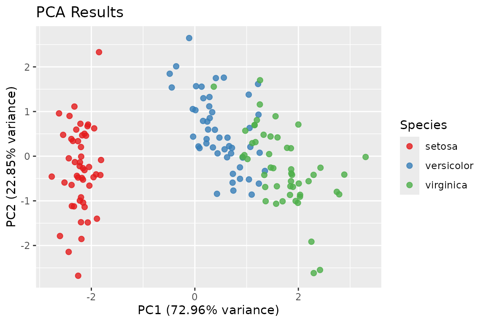

Dimensionality reduction
Source:vignettes/articles/dimensionality-reduction.Rmd
dimensionality-reduction.Rmdfs_pca() and fs_svd() reduce dimension
without selecting features. They replace the original columns with a few
new ones, each a weighted sum of all the inputs. You still have to
measure every variable, and the new columns are chosen without reference
to any outcome: they point in the directions of largest variance, which
need not be the directions that predict anything. If you need to name
the features you keep, use one of the filters, regularization methods, or wrappers instead.
Use fs_pca() on a data frame when you want tidy, labeled
output: variance explained, loadings, scores next to your label columns,
and a plot. Use fs_svd() on a numeric matrix when you want
the raw singular values and vectors, for compression or as input to your
own code.
Both functions return a plain list, not an fs_result, so
selected() and the other fs_result helpers do
not apply.
fs_pca()
Principal component analysis (PCA) finds the orthogonal directions along which the data vary most. The first component is the direction of largest variance, the second is the largest among directions perpendicular to the first, and so on.
fs_pca() runs a
PCA on the numeric columns of a data frame. Character, factor, logical,
and date columns are kept aside as labels, as is the column named in
label_col. By default it keeps two components; set
num_pc for more.
pca <- fs_pca(iris, num_pc = 2, label_col = "Species")
names(pca)
#> [1] "pc_loadings" "pc_scores" "var_explained" "pca_df"
#> [5] "meta" "plot"
pca$var_explained
#> [1] 0.7296245 0.2285076
pca$pc_loadings
#> PC1 PC2
#> Sepal.Length 0.5210659 -0.37741762
#> Sepal.Width -0.2693474 -0.92329566
#> Petal.Length 0.5804131 -0.02449161
#> Petal.Width 0.5648565 -0.06694199
head(pca$pca_df)
#> PC1 PC2 Species
#> <num> <num> <fctr>
#> 1: -2.257141 -0.4784238 setosa
#> 2: -2.074013 0.6718827 setosa
#> 3: -2.356335 0.3407664 setosa
#> 4: -2.291707 0.5953999 setosa
#> 5: -2.381863 -0.6446757 setosa
#> 6: -2.068701 -1.4842053 setosaHow to read the output:
-
var_explainedis the share of the total variance each retained component carries. Oniristhe first two components carry 73.0% and 22.9%, so together they keep about 96% of the variance in the four measurements. The vector sums to 1 only when you keep every component. -
pc_loadingsholds the weights (prcomp()’srotation), one row per input column. PC1 weights the petal measurements and sepal length about equally (0.52 to 0.58), while PC2 is mostly sepal width (-0.92). The sign of a component is arbitrary: a component and its negation describe the same direction, so compare loadings within a column, not their signs across runs. -
pc_scoresholds each observation’s coordinates on the components, andpca_dfis the same scores with the label columns bound alongside.
By default columns are centered and scaled
(scale_data = TRUE), so the PCA runs on the correlation
matrix. Leave scaling on unless every column is in the same meaningful
units; otherwise the column with the largest variance dominates the
first component. Scaling without centering
(scale_data = TRUE, center_data = FALSE) is an error.
Missing values and constant columns
Before the decomposition, fs_pca() drops every row with
a missing value in the numeric columns, and it drops every column with
zero variance with a warning. Infinite values are an error.
meta records what was used:
pca$meta$n_rows_used
#> [1] 150
pca$meta$numeric_cols
#> [1] "Sepal.Length" "Sepal.Width" "Petal.Length" "Petal.Width"iris has no missing values, so all 150 rows are used. On
real data, check meta$n_rows_used and
meta$rows_kept: a few gappy columns can remove most of the
rows without an error. num_pc cannot exceed the number of
usable columns, or the number of usable rows minus one.
Plotting
fs_pca() builds a ggplot of PC1 against PC2, colored by
label_col, whenever a label_col is supplied,
at least two components are kept, and ggplot2 is installed. The plot is
returned in $plot; plot = TRUE also prints
it.
pca$plot
When no plot can be built, the list has no plot element
at all, so test with "plot" %in% names(pca).
Large data
Below 10 million cells (rows times numeric columns),
fs_pca() uses stats::prcomp(). At or above
that size it uses bigstatsr::big_SVD() on a temporary
file-backed matrix, if bigstatsr is installed, and computes only the
requested components; without bigstatsr it falls back to
prcomp(). This engine can return at most one fewer
component than there are columns, so num_pc equal to the
number of columns is an error on large data. The large-data engine
recovers the total variance from column statistics, so
var_explained is still the share of the whole and not of
the components that were computed.
Leakage
PCA never looks at the outcome, but it does learn from the rows it
sees: the centering, scaling, and loadings all come from the data. If
you fit it on all rows and then cross-validate a model on the scores,
the test rows have shaped the features. fs_pca() does not
return the centering and scaling values or a way to project new rows. To
apply a PCA learned on training rows to test rows, fit
stats::prcomp() on the training rows and call
predict() on it. See Validation and leakage for the
general rule.
fs_svd()
The singular value decomposition (SVD) factors a matrix
X into U D V': D holds the
singular values in decreasing order, and the columns of U
and V are the left and right singular vectors. Keeping the
first k triplets gives the best rank-k
approximation of X.
fs_svd() is the
lower-level tool. It takes a numeric matrix x (or an
all-numeric data frame) and returns the singular values and vectors:
m <- as.matrix(mtcars)
s <- fs_svd(m, n_singular_values = 3, scale_input = TRUE)
round(s$singular_values, 3)
#> [1] 14.313 9.064 4.409
dim(s$left_singular_vectors)
#> [1] 32 3
dim(s$right_singular_vectors)
#> [1] 11 3The left singular vectors have one row per observation (32 cars) and
the right singular vectors one row per column (11 variables), each with
one column per kept triplet. By default,
n_singular_values = NULL keeps all of them,
min(dim(x)).
x must not contain NA, NaN, or
Inf. Unlike fs_pca(), fs_svd()
drops nothing for you, so remove or impute missing values first.
scale_input = TRUE (the default) centers and scales the
columns first, so the triplets factor scale(x), not
x. The column means and standard deviations are not
returned; keep them yourself if you need to map results back to the
original units. The other options are FALSE (use
x as is), "center", and "scale",
which follows base::scale() and, without centering, divides
by the root mean square rather than the standard deviation. The dividing
forms stop with an error if a column has zero variance.
On centered and scaled data, the squared singular values divided by
n - 1 are the PCA eigenvalues, so fs_svd() and
prcomp() agree:
all_sv <- fs_svd(m)$singular_values
round(all_sv^2 / (nrow(m) - 1), 4)[1:3]
#> [1] 6.6084 2.6505 0.6272
round(prcomp(m, scale. = TRUE)$sdev^2, 4)[1:3]
#> [1] 6.6084 2.6505 0.6272Exact or approximate
svd_method = "auto" uses base::svd() unless
both of these hold: you ask for fewer singular values than
min(dim(x)), and the smaller dimension of the matrix is
larger than svd_threshold (default 100). Then it uses
RSpectra::svds(), which computes only the leading triplets
and needs the RSpectra package. svd_method = "approx"
forces the approximate solver; if you ask for all
min(dim(x)) values it falls back to the exact solver with a
message, because RSpectra::svds() cannot return the full
set. If RSpectra converges on fewer values than requested, featR warns
and recomputes them exactly.
On a 400 by 150 matrix, the five leading singular values from both
solvers agree to within 1e-6:
set.seed(1)
big <- matrix(rnorm(400 * 150), 400, 150)
approx <- fs_svd(big, n_singular_values = 5, svd_method = "approx")
exact <- fs_svd(big, n_singular_values = 5, svd_method = "exact")
all.equal(approx$singular_values, exact$singular_values, tolerance = 1e-6)
#> [1] TRUESingular vectors are unique only up to sign, so the two solvers, or
two platforms, can return columns with opposite signs. Compare vectors
with abs() or through the reconstructed matrix, not element
by element.